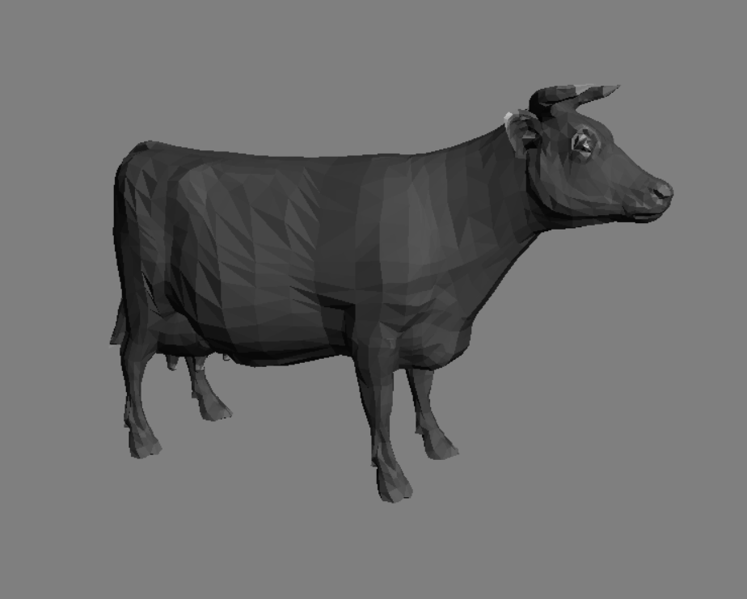

Modeling and animations
A series of labs in computer graphics.
Lab report - Half edge data structure
Lab report - Mesh decimation
Lab report - Mesh subdivision
Lab report - Implicit geometry
Lab report - Level set framework
Lab report - Simulating fluids
Monte Carlo Ray Tracer